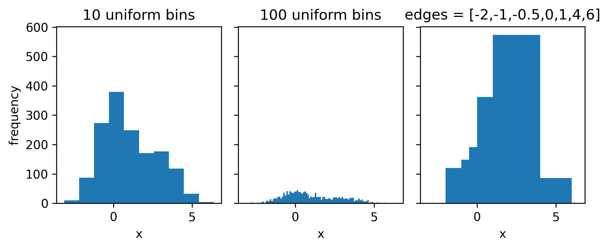
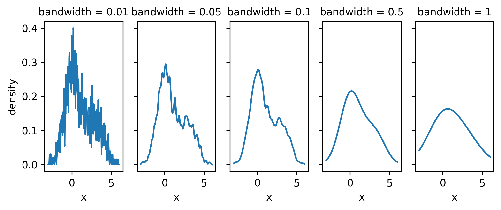

3 Probability and Statistics, in practice
This section focuses on how fundamental statistical ideas are translated into meaningful physics insights. We’ll look at common practice, and summarize the main components needed to set the scene for applications that involve building new ideas with these techniques.
My primary resources for this section were the seminal asymptotics paper (Cowan et al. 2011) and Kyle Cranmer’s stats notes (Cranmer 2014).
3.1 Estimating distributions from data
Often we’re not equipped with a way to describe some data we’re interested in using a probability distribution. In that situation, it’s useful to have a set of density estimation techniques within your toolkit. Here we go over a couple.
3.1.1 Histograms
Ah yes, the infamous histogram. Exceedingly simple by design, it approximates a data distribution through counting the number of data points that lie in a set of adjacent disjoint intervals, or bins. A histogram, then, is expressible as a set of counts and a set of bin edges. See some example histograms in Figure 3.1 to see how the binning can affect the overall envelope of the distribution.
The area under the histogram is equal to \(\sum_{\mathrm{bins~i}} \mathrm{count}_i \times \mathrm{bin~width}_i\); we can force this to unit area by dividing each term in the sum by the bin width and the total number of counts. This produces something that can be interpreted as a (discrete) probability density, which can be useful when looking at just the shape of the distribution, for instance.
3.1.1.1 Why histograms in HEP? {-}
I asked this question on Twitter because I was confused: the HEP analysis paradigm has the histogram as a central object, but why? The reasons I discovered are as follows:
- Data structures: the histogram has many benefits as a vessel to store data, e.g. their memory footprint is independent of the size of the input data – large numbers for the counts are still just single numbers! They also have effectively no cost to evaluate (you just look up the count number based on the bin)
- Poisson modelling: a simple and tractable way to model the likelihood of a collider physics process is with a Poisson-based likelihood function, which has an expected number of counts that is parametrized using templates from signal and background processes. When you make a histogram of your physics quantities, you can model it in this way through having one Poisson distribution per bin!
There was also more in that thread on ease parallel computation, the fact that histograms are good at respecting physical boundaries, and some birds-eye view perspectives on how things are (and could be) done in the field. Many thanks to Kyle Cranmer, Jim Pivarski, Stan Seibert, Nick Smith, and Pablo De Castro for contributing to that discussion – I encourage you to check out the thread!
3.1.2 Kernel density estimation
If you wanted a smooth distribution instead of a discrete one, the kernel density estimate (KDE) has you covered.
It’s a pretty simple but powerful idea: for each data point, define some kernel function that uses the point as a centre (e.g. normal distribution). Then, the distribution of the data at a point \(x\) is equal to the average of the kernel functions evaluated at \(x\).
There are many different choices of kernel function, each with their own tradeoffs, but the most common one in practice is indeed the standard normal distribution \(\mathrm{Normal}(0, 1)\). If we specify the mean as the data, then there’s one missing ingredient – the width of these distributions. That number is called the bandwidth, and controls the width of every kernel at once. Interestingly, the choice of bandwidth affects the resulting shape in general much more than the choice of kernel – see Figure 3.2 for some examples of the bandwidth’s influence on the distribution.

Some talk on a midpoint between KDEs and histograms will appear in the applications part of the thesis!
3.1.3 Fitting an existing distribution
If you have a decent idea on a distribution that may reasonably describe your data, you can simply perform a maximum-likelihood optimization to fit the parameters of the model to the data. One can even compose multiple distributions into a more complex likelihood. Not too much more to say about this, as it essentially comes under point estimation of a model parameter, which we talked about in the previous chapter!
3.1.4 Other data-driven methods
We’ll talk more about these in the machine learning section, e.g. Gaussian processes and normalizing flows. These are generally reserved for when you need a little bit of extra work in order to get a robust result, or to go beyond 1-D and 2-D variables in a scalable way.
3.2 HistFactory: modelling nature as a set of counts
HistFactory (Cranmer et al. 2012) is by far the most common statistical modelling tool used for collider physics data analysis. It’s known for being difficult to understand at first – if you’ve ever seen the full expression for the general likelihood, you’ll have wondered if there was a need to extend the Greek alphabet to write down all the symbols that are used. Here, we’ll take a slower and more gentle approach, building up the HistFactory likelihood piece-by-piece, until hopefully it’s clear enough what’s going on.
3.2.1 Baseline model for a chosen statistic
Given some (new) physics process exists, we may expect \(\lambda\) events to appear in our detector from that process. This number could come from e.g. simulating the physics process. It could also come from e.g. some data driven extrapolation method, but I’m going to call all of this simulation for the sake of the arguments below. The point is that we estimate it before looking at the important data in the region that would contain new physics.
So: say we run our detector, and we record \(n\) independent events. What’s the likelihood of observing these \(n\) events with \(\lambda\) expected from simulation?
We know from the previous chapter that this is modelled well with a Poisson distribution:
\[ p(n|\lambda) = \mathrm{Poisson}(n|\lambda)~. \tag{3.1}\]
Along with the overall number of events we recorded, we may pick some statistic of the data \(x\) that we choose to measure. That variable will have a distribution we can predict from simulation. How do we describe it?
We know that our data is divided into two categories: stuff that came from physics we’re interested in (signal), and stuff that came from everything else (background). We can then say we have \(s\) signal events in our sample and \(b\) background events, with \(s+b=\lambda\), our overall number of expected counts from simulation.
Each value of \(x\) that comes from a signal event can be viewed as a sample from the unknown signal distribution \(f_s(x)\), and likewise for background \(f_b(x)\). We can even think of any particular value we measured (e.g. \(x_0\)) as being “marked” with an extra number – either \(f_s(x_0)\) if it came from signal, or \(f_b(x_0)\) if it belongs to the background. This means that our overall distribution for the variable \(x\) is described by “\(s\)” much of \(f_s(x)\), and “\(b\)”-much of \(f_b(x)\), i.e. for any value of \(x\), it’s density is then
\[ p(x) = \frac{sf_s(x) + bf_b(x)}{s+b}~, \tag{3.2}\]
where we choose to normalize by the total number of events \(s+b\) to treat \(p(x)\) as a proper density.
We can then model the whole dataset \(\{x_i\}_{i=1}^n\) by multiplying the densities of all the individual events, since we assumed they were independent (otherwise we couldn’t use the Poisson distribution!). We can then incorporate Equation 3.1 with Equation 3.2 through multiplication of the densities:
\[ p(\{x_i\}_{i=1}^n) = \mathrm{Poisson}(n|s+b)\prod_{i=1}^n\frac{sf_s(x_i) + bf_b(x_i)}{s+b}~. \tag{3.3}\]
Notice that we don’t have any free parameters right now – the counts \(s\) and \(b\) will be fixed from our physics simulation once we get around to it. But what if wanted to infer the amount of signal present in our data? How would we do that? We can accomplish this through a little trick: we can multiply the number of signal events \(s\) with an additional number \(\mu\) that controls the overall signal strength. Estimating the value of \(\mu\) would then tell us information about the amount of signal present in the data (assuming our model is accurate enough)!
We can now replace \(s\) with \(\mu s\) in Equation 3.3 to get
\[ p(\{x_i\}_{i=1}^n | \mu) = \mathrm{Poisson}(n|\mu s+b)\prod_{i=1}^n\frac{\mu sf_s(x_i) + bf_b(x_i)}{\mu s+b}~. \tag{3.4}\]
In this formalism so far, we’ve kept things generalized to the “unknown” pdfs \(f_s(x)\) and \(f_b(x)\), but we don’t actually have access to them. We can approximate them using a KDE or some other method, but it’s more common to find us with a histogram for this representation (reasons for why are outlined in Section 3.1.1.1).
Say we histogram our simulated signal and background data with the same binning (not required to be uniform) that uses a number of bins \(k\), giving us sets of counts \(\mathbf{h}^{\mathrm{sig}} = \{h_1^{\mathrm{sig}}, h_2^{\mathrm{sig}}, \dots, h_k^{\mathrm{sig}}\}\) and \(\mathbf{h}^{\mathrm{bkg}} = \{h_1^{\mathrm{bkg}}, h_2^{\mathrm{bkg}}, \dots, h_k^{\mathrm{bkg}}\}\). Recall from Section 3.1.1 that we can use these to approximate a density by normalizing with respect to bin width and number of events. Then, if we say a given value of \(x\) falls into some bin with index \(j\), we can write that the density at \(x\) is approximated by the (normalized) count in that bin, for both signal and background separately:
\[ f_s(x \in \mathrm{bin~}j) \approx \frac{h^{\mathrm{sig}}_j}{s\times\mathrm{width~of~bin}~j};~~~f_b(x \in \mathrm{bin~}j ) \approx \frac{h^{\mathrm{bkg}}_j}{b\times\mathrm{width~of~bin}~j} \]
From here, we can express Equation 3.4 as a product over bins \(j\) instead of events \(i\):
\[ p(\{n_j\}_{j=1}^k | \mu) = \mathrm{Poisson}(n|\mu s+b)\prod_{j=1}^k\frac{\mu h^{\mathrm{sig}}_j + h^{\mathrm{bkg}}_j}{\mu s+b}~. \]
Note that we’ve shifted from talking about values of \(x_i\) to bin counts \(n_j\), where \(\sum_{j=1}^k n_i = n\). These counts don’t seem to appear in the likelihood yet, but we can make this explicit through the following relation1:
\[ \mathrm{Poisson}(n|\mu s+b)\prod_{j=1}^k\frac{\mu h^{\mathrm{sig}}_i + h^{\mathrm{bkg}}_i}{\mu s+b} \propto \prod_{j=1}^k \mathrm{Poisson}(n_j | \mu h^{\mathrm{sig}}_j + h^{\mathrm{bkg}}_j)~, \]
where the constant of proportionality is a factor involving factorials of the individual counts (also referred to as combinatorics). Since we don’t care about the overall normalization when we do inference (e.g. the maximum likelihood value is independent of the scale, and the normalization cancels in a likelihood ratio), we will consider this proportionality as an equivalence.
These gymnastics have left us with the following likelihood:
\[ p(\{n_j\}_{j=1}^k | \mu) = \prod_{j=1}^k \mathrm{Poisson}(n_j | \mu h^{\mathrm{sig}}_j + h^{\mathrm{bkg}}_j)~, \tag{3.5}\]
which is simply a product over Poisson distribution for each bin within a histogram, where we expect a contribution of \(\mu h^{\mathrm{sig}}_j + h^{\mathrm{bkg}}_j\) from each of signal and background respectively per bin \(j\). This expression forms the core of the HistFactory approach.
3.2.2 Uncertainty modelling through nuisance parameters
Now, we’ll extend the model from Equation 3.5 in a similar way to when we added \(\mu\) to manipulate the signal scale, but this time, it’s in order to be able to model uncertainties.
The origin of systematic uncertainties in simulation is this: we’re uncertain as to the true values of the physics parameters that we should put into the simulator. Let’s denote an example parameter with \(\alpha\). To quantify how varying \(\alpha\) changes the likelihood in the ideal world, we would just include those parameters of the simulator within our likelihood model. However, this would require the ability to simulate data on-the-fly at any given value of the physics parameter, and then propagate that change all the way through our analysis selection requirements. This is difficult from both a practical and a computational perspective (the simulators we use are expensive to evaluate), plus it would have to be done for all the parameters we may want to model in this way. So what do we do instead? Here I give one example.
We may have a best prediction for \(\alpha\) from studies carried out by e.g. a performance group in your collaboration that focuses on measuring \(\alpha\), but we’ll also have some notion of uncertainty on that value, perhaps in the form of a distribution on \(\alpha\). An example procedure that we often do in this case is to just simulate our physics data at the best guess for that parameter \(\alpha\) – we’ll refer to this as the nominal value \(\alpha_{\mathrm{nom}}\) – and then also simulate data for values at \(\alpha_{\mathrm{nom}}+\sigma_{\alpha} = \alpha_{\mathrm{up}}\) and \(\alpha_{\mathrm{nom}}-\sigma_{\alpha} = \alpha_{\mathrm{down}}\), where \(\sigma_{\alpha}\) is some notion of a standard deviation on \(\alpha\) (e.g. calculated arithmetically on a sample or fitted as part of a normal distribution).
We’re not restricted to the choice of \(\alpha_{\mathrm{up}}\) and \(\alpha_{\mathrm{down}}\), but it’s pretty commonplace as a quick way to get a rough idea of the influence of \(\alpha\) on the histograms. And that’s the point – we really only care about how varying \(\alpha\) changes the resulting histogram for that process – either \(\mathbf{h}^{\mathrm{sig}}\) or \(\mathbf{h}^{\mathrm{bkg}}\). We can then estimate the effect of \(\alpha\) as a continuous change by some kind of interpolation between the resulting histogram yields. All of this results in the addition of as many extra factors as you like to Equation 3.5, which can be broken up into mulitplicative terms and additive terms applied to both \(s\) and \(b\), all of which serve to influence the shape and/or overall normalization of the resulting histogram.
3.2.3 Constraint terms
We discussed constraint terms briefly in Section 2.1.7, where we asserted that if a parameter \(\alpha\) had some kind of external measurement that we wanted to incorporate into the model (not as a Bayesian prior), then we would have to include the likelihood function for that measurement \(p(y|\alpha)\) in the full model, where \(y\) is the measured quantity that provides information about \(\alpha\). We would then multiply the likelihood in Equation 3.5 (after we added in our nuisance parameter \(\alpha\)) by \(p(y|\alpha)\) – the only problem is that we don’t readily have access to this full likelihood. What we do instead is to introduce an approximate constraint that makes use of the provided information (e.g. up/down variations). The way this works is that we take a simple distribution like a standard normal, then choose our “units” such that , and the up/down variations are at +/- 1 standard deviation of, for example, a standard Normal distribution. This would then lead to multiplying Equation 3.5 by \(\mathrm{Normal}(y | \alpha , 1)\), where the nuisance parameter \(\alpha\) is shared between both this part and the \(\mathrm{Poisson}\) part of the overall likelihood.
To get some intuition for this: if \(\hat{\alpha}\neq 0\) (which would correspond to being different to \(\alpha_{\text{nom}}\)), the value of \(\mathrm{Normal}(y | \alpha , 1)\) will be lower than its maximum (since it’s centered around 0), and will penalize the likelihood for contradicting the information on our best guess of \(\alpha\), i.e. we got a lower likelihood than we could have if we agreed more with our previous information on \(\alpha\).
3.3 Hypothesis testing and asymptotic formulae in HEP
In Section 2.3.3, which covered frequentist hypothesis tests, we noted that we don’t necessarily have access to the sampling distribution of the test statistic \(p(t(x)|H_0)\) given a particular null hypothesis \(H_0\), which is the key quantity we need to be able to set our cutoff value for the test. One way to estimate \(p(t(x)|H_0)\) is to simply calculate \(t(x)\) for many samples \(x \sim p(x|H_0)\), and build up the distribution empirically. However, there exist some choices of \(t(x)\) that give us asymptotic guarantees as to the form of \(p(t(x)|H_0)\), i.e. we can fairly reliably know its shape as long as we have a decent enough sample size of \(x\).
One of these choices that we’ve seen a couple times already is the likelihood ratio between a point null at \(\mu\) and a composite alternative represented by the maximum likelihood point \(\hat{\mu}\):
\[ R(x, \mu) = \frac{p(x|\mu)}{p(x|\hat{\mu})}~. \]
We’ll likely have to deal with nuisance parameters in the likelihood, for which we extend this as shown in Equation 2.9 to:
\[ \lambda(x, \mu) = \frac{p\left(x|\mu,\hat{\hat{\theta}}(\mu)\right)}{p\left(x| \hat{\mu}, \hat{\theta}\right)}, \]
where we recall that \(\hat{\hat{\theta}}(\mu)\) represents fitting the value of \(\theta\) while holding \(\mu\) fixed at it’s value from the input to \(\lambda\).
This quantity (or \(-2\ln\) of it at least) forms the basis of all test statistics that we use in tests for the discovery of a new particle, or for setting a limit on a physical quantity (e.g. a particle mass or process cross-section).
3.3.1 Sampling distributions for \(-2 \ln \lambda\)
The first result we’ll exploit to our advantage is that of Wald Wald (1943), who showed that we can relate \(\lambda(x,\mu)\) with the maximum likelihood estimate \(\hat{\mu}\) in the following way:
\[ -2\ln \lambda(x,\mu) = \left(\frac{\mu - \hat{\mu}(x)}{\sigma_{\hat{\mu}}}\right)^2 + \mathcal{O}(\frac{1}{\sqrt{N}})~, \tag{3.6}\]
where \(\sigma_{\hat{\mu}}\) is the standard deviation of \(\hat{\mu}(x)\), which will tend to a normal distribution of this width with sufficient data (and is assumed to do so here), and \(N\) is our data size. This equation is known as Wald’s relation. Note that this is just a quadratic in \(\hat{\mu}(x)\) – the plot of \(-2\ln \lambda(x,\mu)\) vs \(\hat{\mu}(x)\) will be a parabola (to the extent that we can neglect the \(\mathcal{O}(1/ \sqrt{N})\) term). The uncertainty \(\sigma_{\hat{\mu}}\) is an important quantity that we’ll talk about in later sections after doing some groundwork.
Another interesting result is that since we’re already incorporating nuisance parameters within \(\lambda\), the shape of the test statistic against \(\hat{\mu}(x)\) will follow this relation independent of the value of the nuisance parameters.
How do we go from here to \(p(-2\ln \lambda(x,\mu) | H_0)\)? We can take another look at Equation 3.6 and notice that the RHS has the quantity \((\mu - \hat{\mu}(x))/\sigma_{\hat{\mu}}\) all squared. In the large sample size limit (asymptotically), \(\hat{\mu}(x)\) is normally distributed around \(\mu\) with width \(\sigma_{\hat{\mu}}\), meaning that \((\mu - \hat{\mu}(x))/\sigma_{\hat{\mu}}\) follows a standard normal distribution! So if we have a standard normally distributed variable squared, i.e. \(\lambda(x,\mu)\), we have a \(\chi^2\) distribution with one degree of freedom!
This is a powerful result. Let’s apply it for our case of interest, which is the test statistic distribution evaluated at the null, \(-2\ln \lambda(x,\mu_0)\). Neglecting the \(\mathcal{O}(1/ \sqrt{N})\) term for now, we write
\[ -2\ln \lambda(x,\mu_0) = \left(\frac{\mu_0 - \hat{\mu}(x)}{\sigma_{\hat{\mu}}}\right)^2 ~. \tag{3.7}\]
We can then say that, under the assumption of \(H_0\) (i.e. assuming \(x\sim p(x|\mu_0)\)), the MLE \(\hat{\mu}\) will be normally distributed around \(\mu_0\), and \(-2\ln \lambda(x,\mu_0)\) then follows a \(\chi^2\) distribution with one degree of freedom. This is known as Wilks’ theorem Wilks (1938), and gives us access to the sampling distribution we need for hypothesis testing.
What happens when the value of \(\mu\) in the data set is different to \(\mu_0\), and instead is some value \(\mu'\)? The result from Wald in Equation 3.6 allows us to generalize the result from Wilks, where we instead find that have a non-central chi-square distribution with one degree of freedom, written as \(\chi^2(\Lambda)\), which is determined by the non-centrality parameter \(\Lambda\), given by
\[ \Lambda = \left(\frac{\mu_0 - \mu'}{\sigma_{\hat{\mu}}}\right)^2 ~. \tag{3.8}\]
We can see that when we’re back in the regime of \(\mu'=\mu_0\), the non-centrality parameter is 0, which makes the distribution a regular (central) chi-square, as in Equation 3.7. This result will be particularly useful in later sections.
Just to recap notation here, since we’re accumulating a few forms of \(\mu\):
- \(\mu_0\) is the value of \(\mu\) being tested as the null hypothesis, with the alternative being \(\mu\neq\mu_0\).
- \(\hat{\mu}\) is the value fitted to the observed data by maximum likelihood.
- \(\mu'\) is the assumed value of \(\mu\) present in the data itself.
The reason to make the distinction between \(\mu_0\) and \(\mu'\) in particular is that we may not always want the distribution of the test statistic under the null. An example for this is that when we report the expected discovery significance, we’re testing a null of \(\mu_0=0\), but would like to see if we can discover the signal assuming it exists in the data, which would mean we want \(p(-2\ln \lambda(x,\mu_0) | \mu')\), with \(\mu'\) usually being taken as the nominal value of 1 for the signal hypothesis. For that, we’re able to leverage Wald’s result of having a non-central chi-squared distribution, with the non-centrality parameter given as in Equation 3.8.
3.3.2 The catalog of test statistics
The results we showed in the previous section hold for a test statistic of \(-2\ln \lambda(x,\mu)\). In practice, we tend to use some slight variations on this, depending on the physics task we want to undertake. Here are some examples.
Discovery
When we are searching to discover a new physics process, we will test using
\[ q_0(x) = \begin{cases} -2\ln \lambda(x,0)& \text{if } \hat{\mu} \geqslant 0,\\ 0 & \text{if } \hat{\mu} < 0 \end{cases} ~, \tag{3.9}\]
where we have a null hypothesis of \(\mu_0 = 0\), i.e. we test the background-only model. The reason we set \(q_0=0\) when \(\hat{\mu} < 0\) is that this would imply that the MLE for the expected number of events is even smaller than the nominal background, so we assume no signal is present. That means rejection of \(\mu=0\) would then only indicate a positive signal strength \(\mu>0\), indicating the potential presence of some amount of signal.
Upper limit setting
We can also use our hypothesis test as a mechanism to set an exclusion limit on the signal strength \(\mu\), which is conventionally done through an upper limit, as defined in Section 2.3.22. For this, we again turn to \(-2\ln \lambda(x,\mu)\), but only for fitted values of \(\mu\) that are less than the value of \(\mu\) being tested. The reason for this is that data with \(\hat{\mu}\) above our tested value would make it even more signal-like than the null, which for the purposes of bounding \(\mu\) from above, would not be desirable to be in the “extreme” region of the data, i.e. in the rejection area for the hypothesis test. We can circumvent this by setting the test statistic to 0 for \(\hat{\mu} > \mu\), giving us the expression
\[ q_\mu(x) = \begin{cases}-2 \ln \lambda(x, \mu) & \text{if } \hat{\mu} \leq \mu, \\ 0 & \text{if }\hat{\mu}>\mu\end{cases}~. \tag{3.10}\]
Alternative test statistics exist in both cases (denoted by \(\tilde{q\mu}\)) for when the model disallows negative values of \(\mu\). These are not discussed here, but only require minor changes to the definitions of Equation 3.9 and Equation 3.10.
3.4 Asymptotic formulae for simple \(p\)-value calculations
The formulae presented here all stem from the result by Wald in Equation 3.6; they will be stated without lengthy derivation, but the working is mostly algebraic in nature, and builds upon the fact that we neglect the \(\mathcal{O}(1/ \sqrt{N})\) term in that equation3.
We start with the fact that the \(p\)-value (denoted \(p_\mu\) here to highlight the selection of the null hypotheses)from any hypothesis test that we plan to do here can be written as
\[ p_\mu = 1 - F(t(x, \mu) | \mu')~, \]
where \(F(t(x, \mu) | \mu')\) is the cumulative distribution function for our test statistic \(t(x, \mu)\), some chosen value of \(\mu\) as our point null, and an assumed signal strength \(\mu'\) in the data.
As in Section 3.3.2, when trying to discover a signal, we choose the test statistic \(t(x, \mu) = q_0\). In this case, the cumulative distribution \(F(q_0 | \mu')\) can be derived from the results in Section 3.3.1, which comes out to be
\[ F\left(q_0 \mid \mu'\right)=\Phi\left(\sqrt{q_0}-\frac{\mu'}{\sigma_{\hat{\mu}}}\right)~, \]
where \(\Phi\) is the cumulative distribution of the standard Normal distribution. In the case that the data is drawn from the null distribution (\(\mu'=0\)), this reduces to
\[ F\left(q_0 \mid \mu'\right)=\Phi\left(\sqrt{q_0}\right)~, \tag{3.11}\]
meaning our \(p\)-value is then
\[ p_0 = 1 - \Phi\left(\sqrt{q_0}\right)~. \]
For upper limits, we’re switching to using \(q_\mu\) as our test statistic. Similarly to \(q_0\), this leads to the cumulative distribution
\[ F\left(q_\mu \mid \mu'\right)=\Phi\left(\sqrt{q_\mu}-\frac{\mu-\mu'}{\sigma_{\hat{\mu}}}\right)~, \]
which, if the data is from the null (\(\mu=\mu'\)), leads to the same result as Equation 3.11:
\[ F\left(q_\mu \mid \mu'\right)=\Phi\left(\sqrt{q_\mu}\right)~. \]
Our \(p\)-value is then just
\[ p_\mu = 1 - \Phi\left(\sqrt{q_\mu}\right)~. \tag{3.12}\]
These simple formulae underpin pretty much all major data analysis at the Large Hadron Collider – we too will make use of them later on.
3.5 The Asimov dataset and \(\sigma_{\hat{\mu}}\)
In Cowan et al. (2011), they proposed the notion of the Asimov dataset \(x_A(\mu')\), which is defined for a given value of the signal strength \(\mu'\) as the dataset that would cause the fitted value \(\hat{\mu}\) to equal \(\mu'\) (and also some value of the nuisances \(\theta\) to equal \(\theta'\), just to fully specify the parameters). As a simple example, assuming no background uncertainty in the model, this would just be the expected counts at \(\mu=\mu'\), i.e. \(\mu' s+b\).
This may not appear that useful at first, but we can use this in conjunction with the results from Section 3.3 to produce some simple formulae that let us perform hypothesis tests without much computation at all. We start by remembering the result from Wald in Equation 3.6, which tells us
\[ -2\ln \lambda(x,\mu_0) \approx \left(\frac{\mu_0 - \hat{\mu}(x)}{\sigma_{\hat{\mu}}}\right)^2 ~. \]
Evaluating this at the Asimov dataset:
\[ -2\ln \lambda(x_A(\mu'),\mu_0) \approx \left(\frac{\mu_0 - \mu'}{\sigma_{\hat{\mu}}}\right)^2 ~, \]
since, by definition of \(x_A\), \(\hat{\mu}=\mu'\). This is exactly the definition of the non-centrality parameter \(\Lambda\) from Equation 3.8! So using this specific construction of the Asimov dataset, we can get an estimate of \(\Lambda\), which characterizes the general distribution of \(-2\ln \lambda(x,\mu_0)\). Moreover, we can simply rearrange this equation to get
\[ \sigma^2_{\hat{\mu}} \approx - \frac{(\mu_0 - \mu')^2}{2\ln \lambda(x_A(\mu'),\mu_0)} ~, \tag{3.13}\]
which is an estimate of the variance that characterizes the Normal distribution of \(\hat{\mu}\), irrespective of the value it often takes in practice (this will just shift the mean).
Another way to estimate \(\sigma^2_{\hat{\mu}}\) is using the Fisher information matrix of the HistFactory likelihood as in Section 2.2.1, where the diagonal term in its inverse corresponding to the index in the likelihood for \(\mu\) would provide such an estimate, under similar requirements for the asymptotic unbiasedness of the maximum likelihood estimate \(\hat{\mu}\). Both approaches are perfectly valid, though Cowan et al. (2011) claim that Equation 3.13 generally performed better in their experiments.
3.6 The \(\text{CL}_s\) quantity
When setting upper limits, instead of calculating \(p\)-values as in Equation 3.12, the ATLAS experiment mainly uses a modification of \(p_\mu\) that divides by the power of the test \(1-\beta\). Originally proposed in (Read 2002), in which it was termed \(\mathrm{CL}_s\), the quantity is defined as the ratio
\[ \mathrm{CL}_s = \frac{p_{\mu}}{1-p_{\mu=0}}~, \]
where \(p_{\mu=0}\) is the \(p\)-value for the background-only hypotheses, which corresponds to the type-II error \(\beta\), since \(\mu=0\) faithfully represents the alternative when setting limits. At first glance, there’s no statistically obvious interpretation of a ratio of two \(p\)-values, but it does have the desirable property that, for tests with low power (i.e. low sensitivity to the alternative model), the \(\mathrm{CL}_s\) value will be higher than the associated \(p\)-value, and we have less chance to erroneously reject the null when we don’t have good test power to begin with.
This relation arises from noticing that \(\lambda^n = \lambda^{\sum n_j} = \prod_j \lambda^{n_j}\), and using it to manipulate the Poisson on the left-hand side, amongst other things. We gloss over the full working, but I would like to include it if I have time (reading this means I probably didn’t, but I do plan to release a blog post in future).↩︎
We could equally well look at other ordering choices, e.g. a central interval for \(\mu\).↩︎
In Cowan et al. (2011), they show that \(N\) need only be 10 or so for this to work well in their experiments.↩︎